Forecast evaluation (prefix 20 → total 70)
Generated: 2025-09-15T10:52:14.052250Z
| Model | RMSE | sMAPE | N eval wells |
|---|
| KNN | 17.0778 | 0.5110 | 5830 |
| ElasticNet | 32.5558 | 1.2782 | 5830 |
Files
- metrics.csv
- pred_knn.csv (suffix-only)
- pred_elasticnet.csv (suffix-only)
- pred_full_knn.csv (full 0..69)
- pred_full_elasticnet.csv (full 0..69)
- pred_long.csv (long + segment flag)
Full-series examples
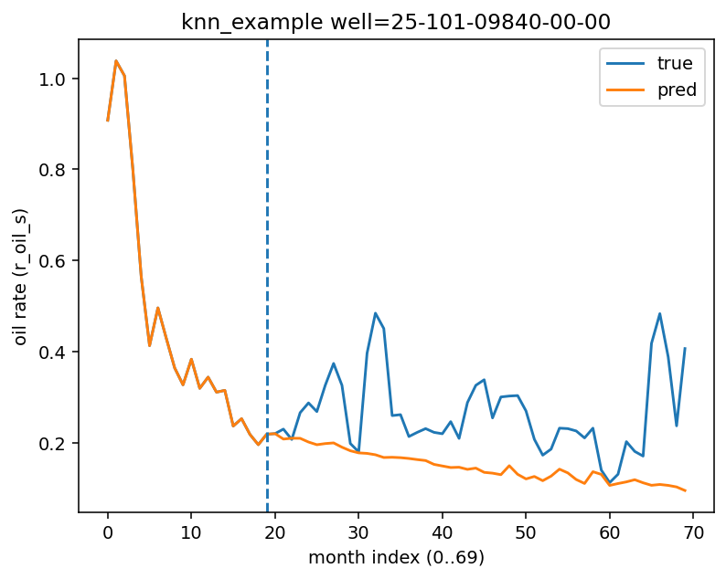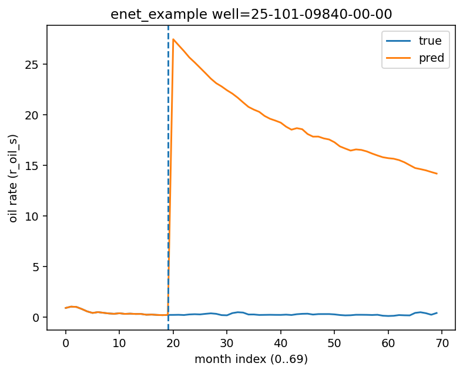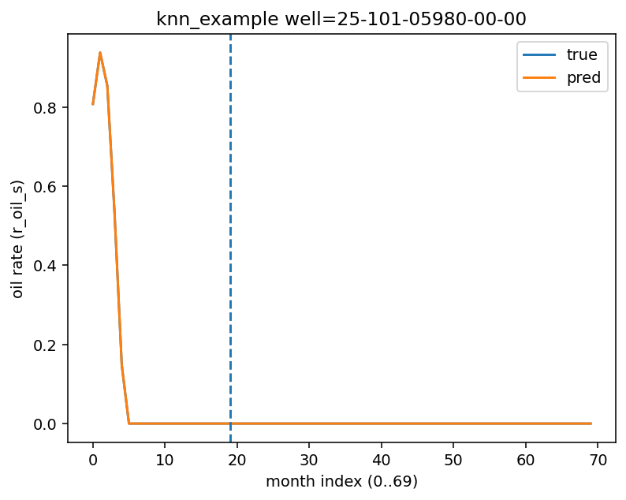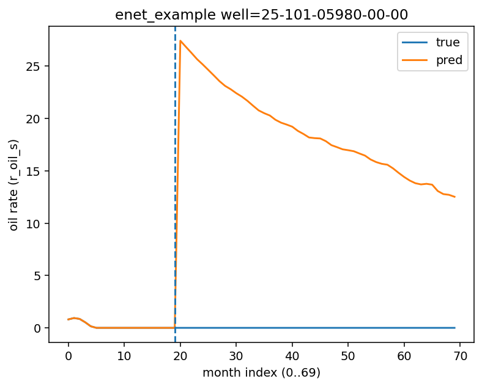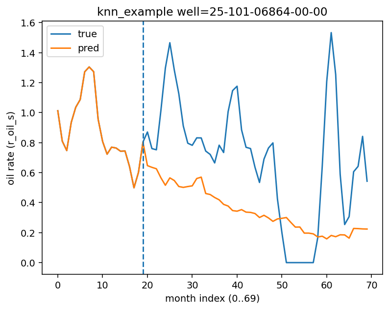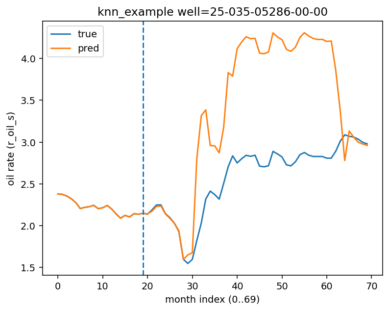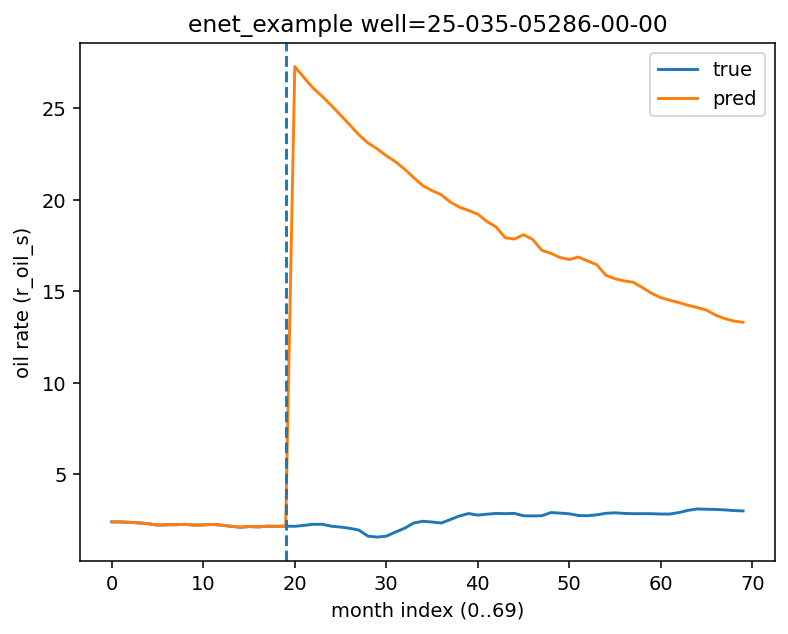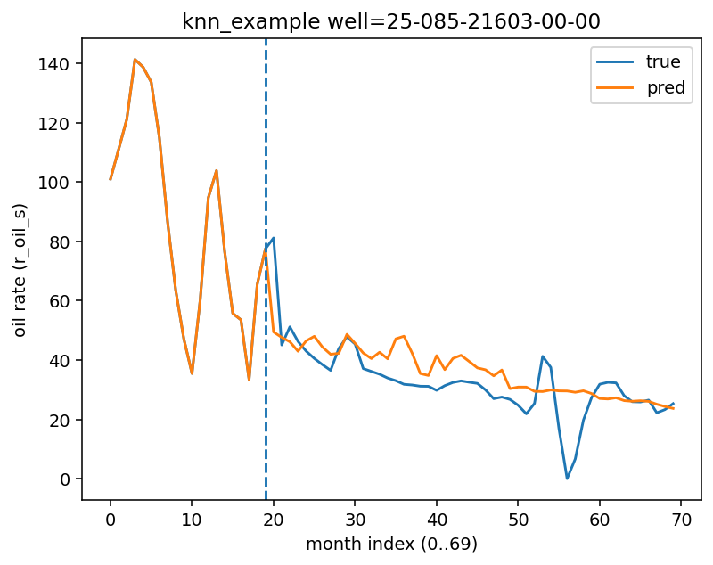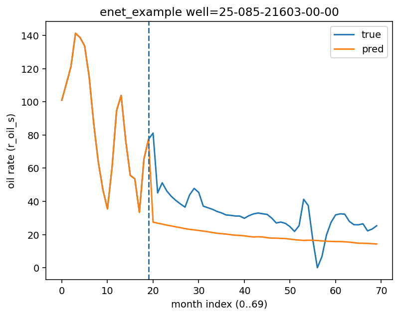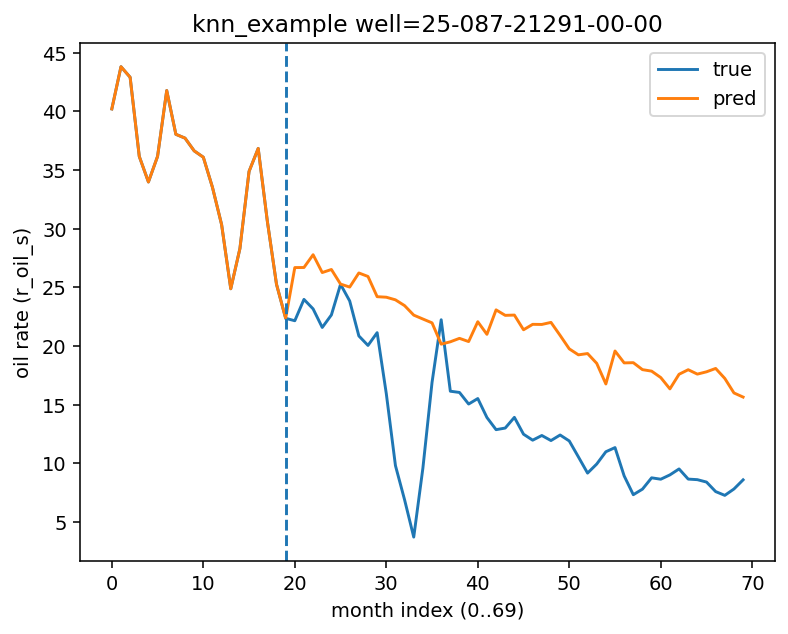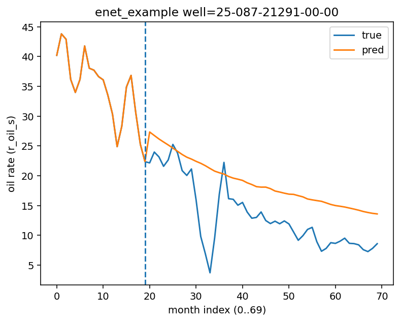